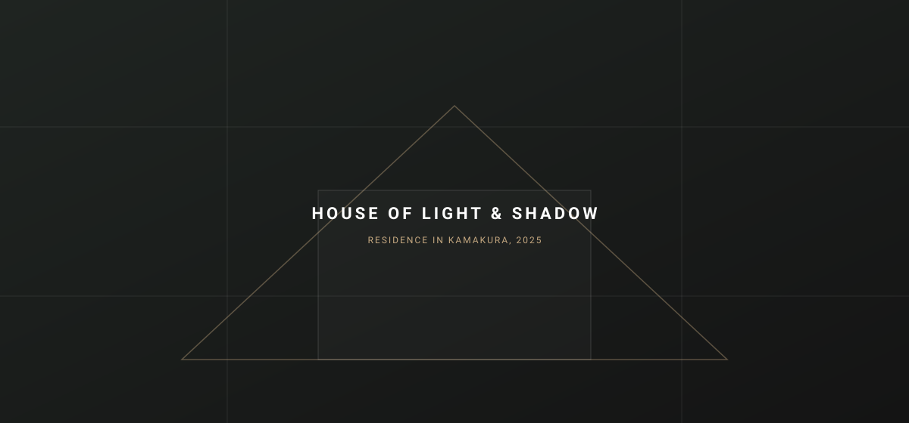
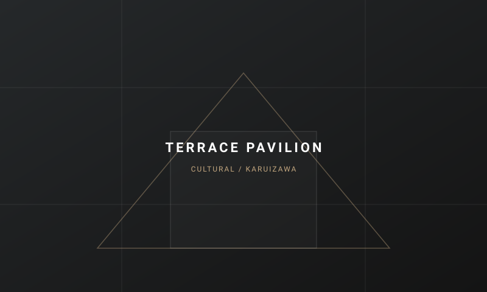
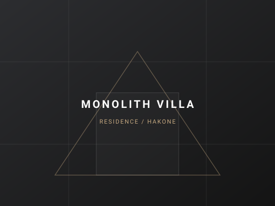
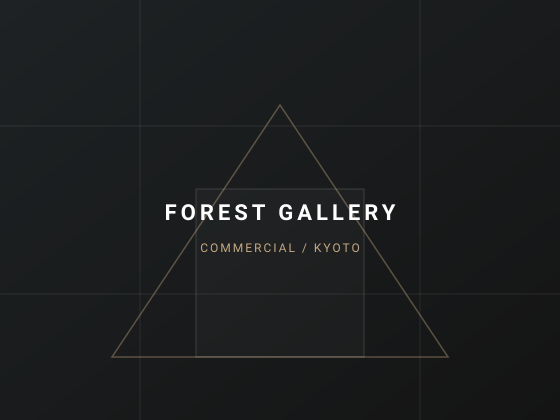

Silence, Light, and
Timeless Structure.
KNOT ARCHITECTSは、風土と光が交差する静謐な空間を設計する建築設計事務所です。環境の文脈を読み解き、永い年月を経て風合いを増す構造体を追求しています。
住宅、ヴィラ、文化・商業施設の設計監理を通じて、人と建築が深呼吸できる新しい原風景を形づくります。
01 // SELECTED WORKS
Architecture & Interior
土地の記憶と幾何学が織りなす、近年の主要なプロジェクト。
-
CULTURAL

-
RESIDENTIAL

-
COMMERCIAL
